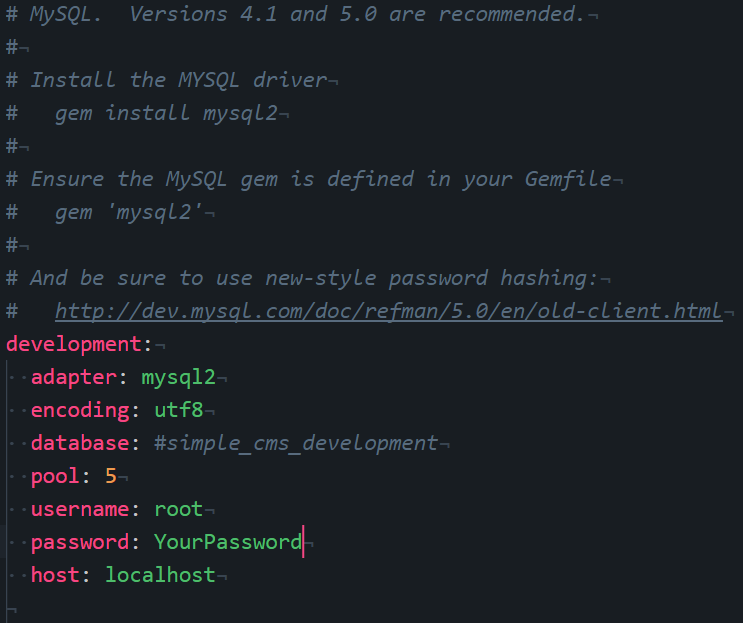
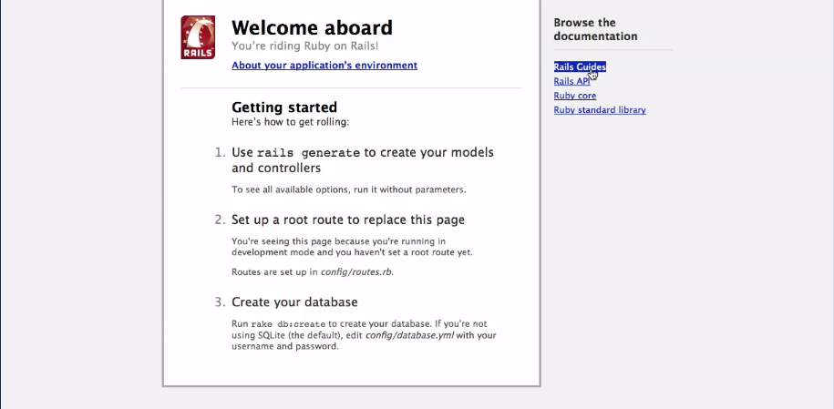
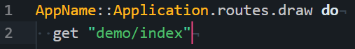
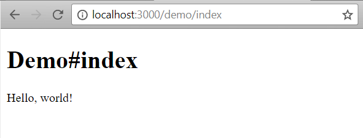
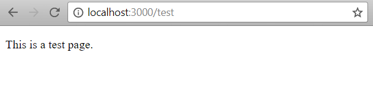

Ruby on Rails Brian Ruff
Section One: Introduction
Intro to Ruby on Rails (RoR)
- Ruby is made up of two parts. Ruby and Rails - Rails is an object oriented programming language - Rails is an open source framework written in the Ruby programming language. - A framework is a set of code libraries and data-structures that provide generic functionality that can be used, overridden or edited. - Rails is one of the most popular frameworks in the world.
Why Use Ruby on Rails
- The Ruby language is Object oriented, easily readable, unsurprising syntax and behavior. - Ruby on Rails runs on the principle of DRY code (don't repeat yourself) which means that every fundamental piece of info. should be expressed in just one place. - RoR was built to be concise and is easily maintainable. - Another Ruby principle is convention over configuration which is sensible default options which means only the unconventional aspects need to be defined. This speeds up development and leads to less code to maintain. RoR uses the 'best practices' that are currently on the Web.
Who should Use RoR?
- Any cane use it, but developers with previous experience, those who want to build sites that interact with databases, those who are tired of recreating site functionality from scratch, those who like best practices, and for developers who are not afraid of the command line.
Prerequisites
- Have web basics already down (browsers, servers, and pages.) - HTML - SQL - CSS & Javascript - Ruby!!
Understanding MVC Architecture
M - Model: data objects, data is most common type of object. V - View: psentation layer (HTML, CSS, JS), what the user sees. C - Controllers: process and responds to user requests (clicking on links). It controls interaction between model and view.
Diagram of MVC

Section Two: Installation
Finding Terminal
1. File>New Finder>Applications>Utilities>Terminal(drag to doc). If on windows download GitBash.
Linux/Mac Commands
- cd ==> change directories - ~ ==> home director - ls ==> listing of current directory contents - cd .. ==> moves back a directory - - ==> the dash(-) lets shell know options are being pass through. The dash must be attached to another command. - ls -la ==> lists all items of directory, file permissions, file owner, file size, date, and shows hidden files. - cmd+k ==> clears shell screen - clear ==> clears shell screen - echo ==> return a value to shell - echo $SHELL ==> gives value of constant called SHELL - which echo ==> shows location of shell - echo $PATH ==> places it will look for commands and the order it will look for them - nano filename ==> opens terminal text editor - cat filename ==> shows the contents of a file
Windows Commands
- dir ==> show contents of current directory. The equivalent of ls - tab ==> auto completes files/folder names - ../ ==> goes back a directory - cd name/name/ ==> goes forward more than one directory
Console Tricks
- cd folder/folder/folder ==> You can change directory to more than one folder at a time. - tab completion ==> Enter the first few letters of a folder/file and then pss tab to auto-complete the name. - cd ../ ==> moves back a specified amount of directories (is specified by the number of ../ following the cd command.)
Installing Ruby
1. Go to ruby webpage and and look for the current stable version. 2. Download and install ruby installer, and be sure to install the appropriate version for your operat ing system (32bit/64bit), and follow the install instructions, and be sure to check the checkbox for "Add Ruby executable files with Ruby installation" as well as the checkbox for "Associate .rb and .rbw with the Ruby installation." 3. Check version in power shell to verify installation. 4. Note that for this guide we'll be installing version 2.0
PS C:\> ruby -v
ruby 2.0.0p648 (2015-12-16) [x64-mingw32]
If no version comes up then try restarting the computer and rerunning the command.
Another way to test if it's installed is this:
PS C:\> ruby -e "puts 1+1"
2
This is executing the ruby code "puts 1+1 "
A third way verify installation is with irb.
PS C:\> irb
irb(main):001:0> 2+2
=> 4
"irb" runs the program called interactive ruby which is similar to a shell for the ruby programming language.
4. Install Development
Kit, and scroll down the page to get the development
kit that matches the version of Ruby that you have
installed, and follow the installation prompts. When
extracting this program be sure to extract it in a new
folder called "DevKit", so the file path will be
"C:\DevKit". We are using the kit for 2.0 to 2.3

Then do the following lines of code
PS C:\DevKit> ls
Directory: C:\DevKit
Mode LastWriteTime Length Name
---- ------------- ------ ----
d----- 2/24/2013 12:31 PM bin
d----- 2/24/2013 12:30 PM etc
d----- 2/5/2010 7:39 PM include
d----- 2/24/2013 12:30 PM lib
d----- 2/24/2013 12:31 PM mingw
d----- 3/17/2010 6:06 PM postinstall
d----- 4/16/2010 11:53 PM sbin
d----- 2/24/2013 12:31 PM share
-a---- 2/24/2013 12:32 PM 297 devkitvars.bat
-a---- 2/24/2013 12:32 PM 361 devkitvars.ps1
-a---- 2/24/2013 12:32 PM 10232 dk.rb
-a---- 7/11/2009 2:34 PM 2238 m.ico
-a---- 9/28/2010 7:48 PM 7167 msys.bat
-a---- 7/11/2009 2:34 PM 37758 msys.ico
PS C:\DevKit> ruby dk.rb init
Initialization complete! Please review and modify the auto-generated
'config.yml' file to ensure it contains the root directories to all
of the installed Rubies you want enhanced by the DevKit.
PS C:\DevKit> dir
Directory: C:\DevKit
Mode LastWriteTime Length Name
---- ------------- ------ ----
d----- 2/24/2013 12:31 PM bin
d----- 2/24/2013 12:30 PM etc
d----- 2/5/2010 7:39 PM include
d----- 2/24/2013 12:30 PM lib
d----- 2/24/2013 12:31 PM mingw
d----- 3/17/2010 6:06 PM postinstall
d----- 4/16/2010 11:53 PM sbin
d----- 2/24/2013 12:31 PM share
-a---- 10/7/2017 5:27 PM 507 config.yml
-a---- 2/24/2013 12:32 PM 297 devkitvars.bat
-a---- 2/24/2013 12:32 PM 361 devkitvars.ps1
-a---- 2/24/2013 12:32 PM 10232 dk.rb
-a---- 7/11/2009 2:34 PM 2238 m.ico
-a---- 9/28/2010 7:48 PM 7167 msys.bat
-a---- 7/11/2009 2:34 PM 37758 msys.ico
PS C:\DevKit> type config.yml
# This configuration file contains the absolute path locations of all
# installed Rubies to be enhanced to work with the DevKit. This config
# file is generated by the 'ruby dk.rb init' step and may be modified
# before running the 'ruby dk.rb install' step. To include any installed
# Rubies that were not automagically discovered, simply add a line below
# the triple hyphens with the absolute path to the Ruby root directory.
#
# Example:
#
# ---
# - C:/ruby19trunk
# - C:/ruby192dev
#
---
PS C:\DevKit> ruby dk.rb install
Invalid configuration or no Rubies listed. Please fix 'config.yml'
and rerun 'ruby dk.rb install'
PS C:\DevKit>
We can verify that the dev kit installed by installing a gem.
PS C:\DevKit> gem install json --platform=ruby
Temporarily enhancing PATH to include DevKit...
Building native extensions. This could take a while...
Successfully installed json-2.1.0
We can now test the json gem we installed
PS C:\DevKit> ruby -rubygems -e "require 'json'; puts JSON.load('[42]').inspect"
[42]
gem list shows all the install gems
PS C:\sites\RoR Project Guide on rails 4.0.0> gem list
*** LOCAL GEMS ***
actioncable (5.1.4, 5.1.3, 5.0.1)
actionmailer (5.1.4, 5.1.3, 5.0.1, 4.2.2, 4.0.8, 4.0.0)
actionpack (5.1.4, 5.1.3, 5.0.1, 4.2.2, 4.0.8, 4.0.0)
actionview (5.1.4, 5.1.3, 5.0.1, 4.2.2)
activejob (5.1.4, 5.1.3, 5.0.1, 4.2.2)
activemodel (5.1.4, 5.1.3, 5.0.1, 4.2.7.1, 4.2.2, 4.0.8, 4.0.0)
activerecord (5.1.4, 5.1.3, 5.0.1, 4.2.7.1, 4.2.2, 4.0.8, 4.0.0)
activerecord-deprecated_finders (1.0.4)
activerecord-sqlserver-adapter (5.1.1, 4.2.15)
activesupport (5.1.4, 5.1.3, 5.0.1, 4.2.7.1, 4.2.2, 4.0.8, 4.0.0)
addressable (2.5.2, 2.5.1)
arel (8.0.0, 7.1.4, 6.0.4, 4.0.2)
ast (2.3.0)
bcrypt (3.1.11)
bigdecimal (1.3.2, default: 1.2.8)
bindex (0.5.0)
binding_of_caller (0.7.3.pre1)
builder (3.2.3, 3.2.2, 3.1.4)
bundler (1.16.0.pre.2, 1.15.4, 1.13.7)
byebug (9.1.0, 9.0.6, 3.4.0)
capybara (2.15.4, 2.15.3, 2.15.2, 2.15.1)
childprocess (0.8.0, 0.7.1)
coffee-rails (4.2.2, 4.2.1, 4.1.0, 4.0.1)
coffee-script (2.4.1)
coffee-script-source (1.12.2)
columnize (0.9.0)
concurrent-ruby (1.0.5, 1.0.4)
crass (1.0.2)
debug_inspector (0.0.3)
debugger-linecache (1.2.0)
devise (4.3.0)
did_you_mean (1.0.0)
erubi (1.6.1)
erubis (2.7.0)
execjs (2.7.0)
ffi (1.9.18 x86-mingw32)
globalid (0.4.0, 0.3.7)
hike (1.2.3)
i18n (0.8.6, 0.7.0)
io-console (0.4.6, default: 0.4.5)
jbuilder (2.7.0, 2.2.3, 1.5.3)
jquery-rails (4.3.1, 4.2.1, 4.0.3, 3.1.4)
json (2.1.0, 1.8.6, default: 1.8.3)
loofah (2.1.1, 2.0.3)
mail (2.6.6, 2.6.4, 2.5.5)
method_source (0.9.0, 0.8.2)
mime-types (3.1, 1.25.1)
mime-types-data (3.2016.0521)
mini_mime (0.1.4)
mini_portile2 (2.3.0, 2.2.0, 2.1.0)
minitest (5.10.3, 5.8.5, 4.7.5)
multi_json (1.12.2, 1.12.1)
mustermann (1.0.1)
mysql (2.9.1 x86-mingw32)
mysql2 (0.4.9 x86-mingw32)
net-telnet (0.1.1)
nio4r (2.1.0, 1.2.1)
nokogiri (1.8.1 x86-mingw32, 1.8.0 x86-mingw32, 1.7.0 x86-mingw32)
orm_adapter (0.5.0)
parser (2.4.0.0)
pg (0.21.0 x86-mingw32, 0.19.0 x86-mingw32, 0.17.1 x86-mingw32)
polyglot (0.3.5)
power_assert (1.1.0, 0.2.6)
psych (2.2.4, default: 2.1.0)
public_suffix (3.0.0, 2.0.5)
puma (3.10.0, 3.9.1)
rack (2.0.3, 2.0.1, 1.6.8, 1.5.5)
rack-protection (2.0.0)
rack-test (0.7.0, 0.6.3)
rails (5.1.4, 4.0.8, 4.0.0)
rails-deprecated_sanitizer (1.0.3)
rails-dom-testing (2.0.3, 2.0.2, 1.0.8)
rails-html-sanitizer (1.0.3)
rails_12factor (0.0.3, 0.0.2)
rails_serve_static_assets (0.0.5)
rails_stdout_logging (0.0.5)
railties (5.1.4, 5.1.3, 5.0.1, 4.2.2, 4.0.8, 4.0.0)
rake (12.1.0, 12.0.0, 10.4.2)
rb-fsevent (0.10.2)
rb-inotify (0.9.10)
rb-readline (0.5.5, 0.5.3)
rdoc (5.1.0, 4.3.0, default: 4.2.1)
responders (2.4.0)
ruby (0.1.0)
rubygems-update (2.6.13)
rubyzip (1.2.1, 1.2.0)
sass (3.5.2, 3.5.1, 3.4.23, 3.2.19)
sass-listen (4.0.0)
sass-rails (5.0.6, 5.0.2, 4.0.5)
sdoc (0.4.2, 0.4.0)
selenium-webdriver (3.6.0, 3.5.1)
sinatra (2.0.0)
slop (3.6.0)
solargraph (0.12.2, 0.11.2)
spring (1.1.3)
sprockets (3.7.1, 2.12.4)
sprockets-rails (3.2.1, 3.2.0, 2.0.1)
sqlite3 (1.3.13 x86-mingw32, 1.3.12 x86-mingw32, 1.3.9 x86-mingw32)
sqlite3-ruby (1.3.3)
test-unit (3.2.6, 3.1.5)
thor (0.20.0, 0.19.4)
thread_safe (0.3.6, 0.3.5)
tilt (2.0.8, 2.0.5, 1.4.1)
tiny_tds (2.0.0 x86-mingw32, 1.1.0 x86-mingw32)
treetop (1.4.15)
turbolinks (5.0.1, 2.3.0)
turbolinks-source (5.0.3)
tzinfo (1.2.3, 1.2.2, 0.3.53)
tzinfo-data (1.2017.2)
uglifier (3.2.0, 2.5.3)
warden (1.2.7)
web-console (3.5.1, 2.0.0.beta3)
websocket-driver (0.7.0, 0.6.5, 0.6.4)
websocket-extensions (0.1.2)
xpath (2.1.0)
yard (0.9.9)
Ruby Gems
Ruby gems are typically installed with the Ruby installer. However, you can do so manually by going to the Ruby gems webpage, and installing the most recent version.
PS C:\> gem -v
2.6.13
Verifies that ruby gems are installed, and shows the version of the ruby gem package manager.
gem list
PS C:\> gem list
minitest <1.6.0>
rake <0.0.7>
rdoc <2.5.8>
Update the copy of ruby gems package manager
PS C:\> gem update --system
Latest version currently installed. Aborting.
Ruby gem package manager command line help
PS C:\> gem --help
RubyGems is a sophisticated package manager for Ruby. This is a
basic help message containing pointers to more information.
Usage:
gem -h/--help
gem -v/--version
gem command [arguments...] [options...]
Examples:
gem install rake
gem list --local
gem build package.gemspec
gem help install
Further help:
gem help commands list all 'gem' commands
gem help examples show some examples of usage
gem help gem_dependencies gem dependencies file guide
gem help platforms gem platforms guide
gem help show help on COMMAND
(e.g. 'gem help install')
gem server present a web page at
http://localhost:8808/
with info about installed gems
Further information:
http://guides.rubygems.org
Rails
- Rails is a gem. - gem install nameofgem will install new gems. - gem install nameofgem --version versionnumber will install a specific version of a gem. - adding --no-ri --no-rdoc will skip over the documentation files from rails.
PS C:\> gem install rails --version 4.0.0 --no-ri --no-rdoc
Successfully installed rails-4.0.0
1 gem installed
MySQL
1. Download MySQL community version(MSI installer(the larger file)) 2. Set default MySQL password. a. Go to MySQL Command Line Client c. enter SHOW DATABASES;
mysql> SHOW DATABASES;
+--------------------+
| Database |
+--------------------+
| information_schema |
| mysql |
| performance_schema |
| sakila |
| sys |
| world |
+--------------------+
6 rows in set (0.01 sec)
3. Install MySQL RubyGem
PS C:\> gem install mysql2 --no-rdoc --no-ri
======================================================================
You've installed the binary version of mysql2.
It was built using MySQL Connector/C version 6.1.11.
It's recommended to use the exact same version to avoid potential
issues.
At the time of building this gem, the necessary DLL files were
retrieved from:
http://cdn.mysql.com/Downloads/Connector-C/mysql-connector-c-6.1.11-
win32.zip
This gem *includes* vendor/libmysql.dll with redistribution notice
in vendor/README.
======================================================================
Successfully installed mysql2-0.4.9-x86-mingw32
Text Editor
1. Download and install Atom Text Editor
or another text editor that is similar with code editing
capability (Sublime
Text Editor)
2. Text editor should be able to easily navigate between files.
3. Preffered features of text editor include:
- auto tag complete
- Autoident
- Code completion
- Customize document and code coloring (aka themes)

Example pic of the text-editor called Atom. Atom was developed by GitHub, a company that allows people to share their code with the world.
Special Version installation
Use the gem install rails -v versionnumber to install an older version of rails.
PS C:\sites\RoR Project Guide on rails 4.0.0> gem install rails
-v 4.0.0 --no-ri --no-rdoc
Successfully installed rails-4.0.0
1 gem installed
Use rails _4.0.0_ new appname command to create a rails app that uses a specific version of rails
PS C:\sites\RoR Project Guide on rails 4.0.0> rails
_4.0.0_ new appname
create
create README.rdoc
create Rakefile
create config.ru
create .gitignore
create Gemfile
create app
create app/assets/javascripts/application.js
create app/assets/stylesheets/application.css
create app/controllers/application_controller.rb
create app/helpers/application_helper.rb
create app/views/layouts/application.html.erb
create app/assets/images/.keep
create app/mailers/.keep
create app/models/.keep
create app/controllers/concerns/.keep
create app/models/concerns/.keep
create bin
create bin/bundle
create bin/rails
create bin/rake
create config
create config/routes.rb
create config/application.rb
create config/environment.rb
create config/environments
create config/environments/development.rb
create config/environments/production.rb
create config/environments/test.rb
create config/initializers
create config/initializers/backtrace_silencers.rb
create config/initializers/filter_parameter_logging.rb
create config/initializers/inflections.rb
create config/initializers/mime_types.rb
create config/initializers/secret_token.rb
create config/initializers/session_store.rb
create config/initializers/wrap_parameters.rb
create config/locales
create config/locales/en.yml
create config/boot.rb
create config/database.yml
create db
create db/seeds.rb
create lib
create lib/tasks
create lib/tasks/.keep
create lib/assets
create lib/assets/.keep
create log
create log/.keep
create public
create public/404.html
create public/422.html
create public/500.html
create public/favicon.ico
create public/robots.txt
create test/fixtures
create test/fixtures/.keep
create test/controllers
create test/controllers/.keep
create test/mailers
create test/mailers/.keep
create test/models
create test/models/.keep
create test/helpers
create test/helpers/.keep
create test/integration
create test/integration/.keep
create test/test_helper.rb
create tmp/cache
create tmp/cache/assets
create vendor/assets/javascripts
create vendor/assets/javascripts/.keep
create vendor/assets/stylesheets
create vendor/assets/stylesheets/.keep
run bundle install
Fetching gem metadata from https://rubygems.org/...........
Fetching gem metadata from https://rubygems.org/....
Fetching gem metadata from https://rubygems.org/...
Resolving dependencies.....
Using rake 12.1.0
Using i18n 0.8.6
Using minitest 4.7.5
Using multi_json 1.12.2
Using thread_safe 0.3.6
Using tzinfo 0.3.53
Using activesupport 4.0.0
Using builder 3.1.4
Using erubis 2.7.0
Using rack 1.5.5
Using rack-test 0.6.3
Using actionpack 4.0.0
Using mime-types 1.25.1
Using polyglot 0.3.5
Using treetop 1.4.15
Using mail 2.5.5
Using actionmailer 4.0.0
Using activemodel 4.0.0
Using activerecord-deprecated_finders 1.0.4
Using arel 4.0.2
Using activerecord 4.0.0
Using bundler 1.16.0.pre.2
Using coffee-script-source 1.12.2
Using execjs 2.7.0
Using coffee-script 2.4.1
Using thor 0.20.0
Using railties 4.0.0
Using coffee-rails 4.0.1
Using hike 1.2.3
Using jbuilder 1.5.3
Using jquery-rails 3.1.4
Using json 1.8.6
Using tilt 1.4.1
Using sprockets 2.12.4
Using sprockets-rails 2.0.1
Using rails 4.0.0
Using rdoc 4.3.0
Using sass 3.2.19
Using sass-rails 4.0.5
Using sdoc 0.4.2
Using sqlite3 1.3.13 (x86-mingw32)
Using turbolinks-source 5.0.3
Using turbolinks 5.0.1
Using uglifier 3.2.0
Bundle complete! 9 Gemfile dependencies, 44 gems now installed.
Use `bundle info [gemname]` to see where a bundled gem is installed.
Since we are using an older version of ruby we may have to install the gem certifier manaully. We can do this by following the steps here
You may have to install an older version of MySQL to get up-and-running as well. Go to your current gemfile for this project and delete the current mysql version and paste in # Use mysql as the database for Active Record gem 'mysql2', '~> 0.3.20', and then run bundle install in the command line. Next, go to the Config>database.yml file and enter your MySQL root password.
Section 3: Create Project
Create Project Directory
Since we are using the WEBBRICK webserver that comes with rails we can access our app from anywhere on our hard drive. However, it still makes since to keep it with your other web code.
Creating a Work Web Directory
1. Open powershell 2. cd to your C drive C:\
PS C:\users\brff1> cd ../..
PS C:\>
3. make the sites folder and cd into it
PS C:\> mkdir Sites
Directory: C:\
Mode LastWriteTime Length Name
---- ------------- ------ ----
d----- 10/9/2017 3:24 AM Sites
PS C:\> cd Sites
PS C:\Sites>
Create App Framework
generate the app framework by typing in rails new app_name -d mysql. You want to name your apps using the CamelCasing naming convention or by seperating each word with underscores. This command is essentially saying "create a new app using the rails framework that is configured to use the mysql database." If you do not type in -d mysql then rails will default to sqllite3. Rails can support sqlite3, mysql, and postgresql. Rails has database support via plugins from oracle, ibm_db, sqlserver, and frontbase in the form of rubygems.
PS C:\Sites> rails new app_name -d mysql
create
create README.rdoc
create Rakefile
create config.ru
create .gitignore
create Gemfile
create app
create app/assets/javascripts/application.js
create app/assets/stylesheets/application.css
create app/controllers/application_controller.rb
create app/helpers/application_helper.rb
create app/views/layouts/application.html.erb
create app/assets/images/.keep
create app/mailers/.keep
create app/models/.keep
create app/controllers/concerns/.keep
create app/models/concerns/.keep
create bin
create bin/bundle
create bin/rails
create bin/rake
create config
create config/routes.rb
create config/application.rb
create config/environment.rb
create config/environments
create config/environments/development.rb
create config/environments/production.rb
create config/environments/test.rb
create config/initializers
create config/initializers/backtrace_silencers.rb
create config/initializers/filter_parameter_logging.rb
create config/initializers/inflections.rb
create config/initializers/mime_types.rb
create config/initializers/secret_token.rb
create config/initializers/session_store.rb
create config/initializers/wrap_parameters.rb
create config/locales
create config/locales/en.yml
create config/boot.rb
create config/database.yml
create db
create db/seeds.rb
create lib
create lib/tasks
create lib/tasks/.keep
create lib/assets
create lib/assets/.keep
create log
create log/.keep
create public
create public/404.html
create public/422.html
create public/500.html
create public/favicon.ico
create public/robots.txt
create test/fixtures
create test/fixtures/.keep
create test/controllers
create test/controllers/.keep
create test/mailers
create test/mailers/.keep
create test/models
create test/models/.keep
create test/helpers
create test/helpers/.keep
create test/integration
create test/integration/.keep
create test/test_helper.rb
create tmp/cache
create tmp/cache/assets
create vendor/assets/javascripts
create vendor/assets/javascripts/.keep
create vendor/assets/stylesheets
create vendor/assets/stylesheets/.keep
run bundle install
The latest bundler is 1.16.0.pre.2, but you are currently running 1.15.4.
To update, run `gem install bundler --pre`
Fetching gem metadata from https://rubygems.org/...........
Fetching version metadata from https://rubygems.org/...
Fetching dependency metadata from https://rubygems.org/..
Resolving dependencies...
Using rake 12.1.0
Using i18n 0.8.6
Using minitest 4.7.5
Using multi_json 1.12.2
Using thread_safe 0.3.6
Using tzinfo 0.3.53
Using builder 3.1.4
Using erubis 2.7.0
Using rack 1.5.5
Using mime-types 1.25.1
Using polyglot 0.3.5
Using activerecord-deprecated_finders 1.0.4
Using arel 4.0.2
Using bundler 1.15.4
Using coffee-script-source 1.12.2
Using execjs 2.7.0
Using thor 0.20.0
Using hike 1.2.3
Using json 1.8.6
Using mysql2 0.4.9 (x64-mingw32)
Using tilt 1.4.1
Using rdoc 4.3.0
Using sass 3.2.19
Using turbolinks-source 5.0.3
Using activesupport 4.0.0
Using rack-test 0.6.3
Using treetop 1.4.15
Using coffee-script 2.4.1
Using uglifier 3.2.0
Using sprockets 2.12.4
Using sdoc 0.4.2
Using turbolinks 5.0.1
Using activemodel 4.0.0
Using jbuilder 1.5.3
Using actionpack 4.0.0
Using mail 2.5.5
Using activerecord 4.0.0
Using railties 4.0.0
Using sprockets-rails 2.0.1
Using actionmailer 4.0.0
Using coffee-rails 4.0.1
Using jquery-rails 3.1.4
Using sass-rails 4.0.5
Using rails 4.0.0
Bundle complete! 9 Gemfile dependencies, 44 gems now installed.
Use `bundle info [gemname]` to see where a bundled gem is
installed.
PS C:\Sites>
Enter the root of the the application by typing in cd app_name.
Introduction to Bundler
You can view more about bundler by visiting Bundler's website.
There are two files within the rails framework that pertain to bundler. They are called Gemfile and Gemfile.lock. In your command line type in atom gemfile. This will prompt our text editor to open the Gemfile.
Gemfile contails configuration information about what gemfiles we want to load as well as their corresponding versions. Gemfile is the file that we should edit when we want to add or remove gems from our project. Once you add or remove a gem, you must go to the command line and type in bundle install. This will push the changes the Gemfile.lock file.
Gemfile.lock lists the Gem followed by it's dependencies. Navigate to the Gemfile.lock and peruse through the file, but do not change this file. This is bundler file to modify, and it does so with the bundle install command.
PS C:\users\brff1\sites\simple_cms> bundle install
The latest bundler is 1.16.0.pre.2, but you are currently running 1.15.4.
To update, run `gem install bundler --pre`
Using rake 12.1.0
Using i18n 0.8.6
Using minitest 4.7.5
Using multi_json 1.12.2
Using thread_safe 0.3.6
Using tzinfo 0.3.53
Using builder 3.1.4
Using erubis 2.7.0
Using rack 1.5.5
Using mime-types 1.25.1
Using polyglot 0.3.5
Using activerecord-deprecated_finders 1.0.4
Using arel 4.0.2
Using bundler 1.15.4
Using hike 1.2.3
Using json 1.8.6
Using mysql2 0.3.21 (x64-mingw32)
Using thor 0.20.0
Using tilt 1.4.1
Using rdoc 4.3.0
Using activesupport 4.0.0
Using rack-test 0.6.3
Using treetop 1.4.15
Using sprockets 2.12.4
Using sdoc 0.4.2
Using activemodel 4.0.0
Using actionpack 4.0.0
Using mail 2.5.5
Using activerecord 4.0.0
Using railties 4.0.0
Using sprockets-rails 2.0.1
Using actionmailer 4.0.0
Using rails 4.0.0
Bundle complete! 3 Gemfile dependencies, 33 gems now installed.
Use `bundle info [gemname]` to see where a bundled gem is
installed.
PS C:\users\brff1\sites\simple_cms>
If you ever work on someone elses project then you should run bundle install, so that all the gems and depenedcies are sorted out and the application can be ran.
Go through the Gemfile and comment out all the gems with the exception of rails and mysql. You can comment something out in Ruby by using the # symbol in front of the text you are targeting. When you comment something out it will turn a different color depending on your text editors color theme profile.
gem 'rails', '4.0.0'
#gem'sass-rails', '~>4.0.0'
Now, that you have edited the Gemfile you need to run bundle install in the command line.
Accessing a Project
Go to your command line and start-up the web server by typing in rails s
Visit the localhost:3000 website. This site is dedicated to our development. 127.0.0.1:3000 is also possible to use. After the command is started, this shell can no longer be used. You must open up a new shell, as the old one is now a dedicated server.
PS C:\users\brff1\sites\simple_cms> rails s
DL is deprecated, please use Fiddle
=> Booting WEBrick
=> Rails 4.0.0 application starting in
development on http://0.0.0.0:3000
=> Run `rails server -h` for more startup
options
=> Ctrl-C to shutdown server
[2017-10-09 14:05:16] INFO WEBrick 1.3.1
[2017-10-09 14:05:16] INFO ruby 2.0.0
(2015-12-16) [x64-mingw32]
[2017-10-09 14:05:16] INFO
WEBrick::HTTPServer#start: pid=2196 port=3000
If you are getting the Access denied for user 'root'@'localhost' (using password:NO) error then go into the project folders config file and go to the database.yml file. You will need to enter the password for MySQL under development. While you are there, you should comment out the database since we have not created it yet. Save your changes and then restart then restart the server and reload our webpage again.

You should see this image after you reload the
web page.

Generating a Controller
We are going to generate a controller in this section,but to understand what is going on we need to think back to the MVC architecture.
First, the browser makes a request which is received by the controller. The controller decides where the request should go. If the model is not needed then the controller goes to the views folder then back to the browser. The Browser-Controller-View-Browser triangle is the minimum requirement when a request occurs. This is the section that this section of this guide will focus on. We will go into more detail on the other parts later in the guide.
Create Controller and View
1. Ensure you are in the root of the rails application in the command line.
2. type in rails generate
PS C:\users\brff1\sites\app_name> rails generate controller demo index
DL is deprecated, please use Fiddle
create app/controllers/demo_controller.rb
route get "demo/index"
invoke erb
create app/views/demo
create app/views/demo/index.html.erb
invoke test_unit
create test/controllers/demo_controller_test.rb
invoke helper
create app/helpers/demo_helper.rb
invoke test_unit
create test/helpers/demo_helper_test.rb
invoke assets
invoke coffee
create app/assets/javascripts/demo.js.coffee
invoke scss
create app/assets/stylesheets/demo.css.scss
What did we just do? We created a controller named demo and a view called index. Why did I call the view index instead of view_name? Well, in truth, it could be called anything, so I am just using placeholder names in this guide. Furthermore, the term action and view are interchangable in the context of this guide and with ruby in general.
The reason I call the view the
action is because it the view
is performing an action within
the controller. Go to the
follow file path in the atom
text editor: app_name>controllers>demo_controller.rb

The circled part is the view/action
that we created. This view/action is
associated with the demo
controller.
If we go to app_name>app>views>demo>index.h tml.erb we can access the html and ruby page that will be displayed on the webpage. What's important to note is the file pathing. The views has the demo folder with the index view file that we created when we generated the controller with the "rails generate controller demo index" command.
Next, open up the
index.html.erb file.
Change the paragraph tag information
so that it looks like
<p>Hello, world!</p>
This will make a change to the
demo index views page. In order to
access this file we must make some
changes to the routes file. To do
that go to
app_name>config>routes.rb
You will find:

The lines that say get "demo/index" is what allows allows our application to make the connection between the request that comes in and to know to send the request to the controller followed by the view ("demo/index").
Let's access our new page by
typing starting our rails server
with rails s and then
typing in
http://localhost:3000/demo/index into your browser.
You should get the pic below.

If you are getting errors that say you are missing jquery or turbolink then you need to uncomment those gems in the Gemfile and then run bundle install in the command line, run rails s and you should be able to view the page.
Rails File Structure
App Directory
- Contains most of the applications code. - Contains the MVC strucutre, that is it houses the models, views and controllers folders. - The models folder contails a concerns folder which allows common code to be stored and shared to different controllers and models. - Helpers folder contains code that 'helps us' with our views. Any ruby code that supports the HTML views file is stored in the helpers folder. - Mailers folder is for sending emails. - Assets folder is the place for images, javascript and style sheets. It allows images/js/css to be used by the assets pipeline. - The bin folder hold the bundle, rails and rake folder. - Config folder contains config files which is kept seperate from application code. It hold the database.yml and routes.rb files. It also houses the environment folder which contains the development, production and test.rb files which are used for various stages of development a website. The initializers folder holds files that are used when the app launches. The locales folder is for internationlization and shouldn't be messed with. - The db folder is for storing code related to managing our database (specfically db migrations.) -Gemfile and Gemfile.lock contain data pertaining gems and their dependencies, and works closely with bundler. - log folder is for logging info to log files. - public folder - anything in this is visible to the public. - README.rdoc is for explaining what your app does. - test folder - is a place for storing test code that is used for testing your app. Testing your app is a best practice in web development, and Rails has it built in. -vendor is rarely used due to ruby gems overtaking it's job, but it's used for third party code when necessary.
Handling Server Requests

Above is the rails architecture, not just the MVC architecture. You see, before the MVC is accessed the webserver (WEBBRICK in our case) accesses the public folder and checks to see if the url matches any content within it. If the content does not match then it pases the request to the routes which then checks for the path, and sends the routing information (if there is a match) and it's sent off to the controller. The controller uses the routing data to decide if it needs to query the model or the views folders. If the model is not needed then the view is accessed, and then sent back to the webserver which sends the data to the users browser to be displayed.
We are going to create a new html file in the public folder. The html file will contain the following code.
<p>This is a test</p>
We will then access the file through
our server by typing in
localhost:3000/test.html

is the result your should get.
Next, we are going to make a folder
within the public folder and name the
folder demo. Within the demo folder we
are going to move the test.html file we
made earlier.
If you type in
localhost:3000/demo/test
then you will get the test.hml page
still.
But what happens if we change the name
of test.html to index.html?
We will have two files with partially
the same name. The file in
views>demo>index.html.erb
and public>demo>test.html.
However, since we have a
test.html in the public
folder it will be accessed first before
the views folder because the rails
artchitecture goes through the public
folder before accessing the MVC
architecture. Refer to the image
below.
Section Four: Routes
Simple, match route
For this part you will need to start by renaming the Public>demo>index.html back to test.html. The reason is that we want to access the MVC framework, not the public folder.
Type in localhost:3000/demo You will get an error that says No route matches [GET] "/demo". Just make a mental note of this for now, and pull your webserver command line up, and look at the following line of text from the web server.
Started GET "/demo/index" for 127.0.0.1 at
2017-10-09 19:36:16 -0400
Processing by DemoController#index as HTML
Rendered demo/index.html.erb within
layouts/application (0.0ms)
Completed 200 OK in 7ms (Views: 6.9ms |
ActiveRecord: 0.0ms)
The first line is saying the request was sent in to GET "/demo/index". This was then processed via DemoController#index that we made when we generated the controller and action.
get "demo/index" is short for match "demo/index", :to => "demo#index", :via => :get
The longer bit of code above is saying "match the string "demo/index" to the controller "demo#index" via a :get request.
Default route structure
Defauly routes looks like :controller/:action/:id always in that order.
The route match ':controller(/:action(/:id(.:format)))', :via => :get is saying look for a controller as to what was typed in. In our case it was demo. Demo was found, so the page can be displayed with just typing localhost:3000/demo. Next, the page will look for actions followed by id and format. If the action is missing then then rails will look for a default action which in our case it is index since that's what we made when we created the controller with the rails generate controller demo index
Root Route
When you access the root of the page, but there is no text or action to match then where should you go? You simply make a root route that tells the app to go to the root of the app which is the home page. You can do this using root :to => "demo#index" or the shorter version root "demo#index". We place this route at the very top of the routes, and the match route we had earlier is placed at the bottom of all the routes.